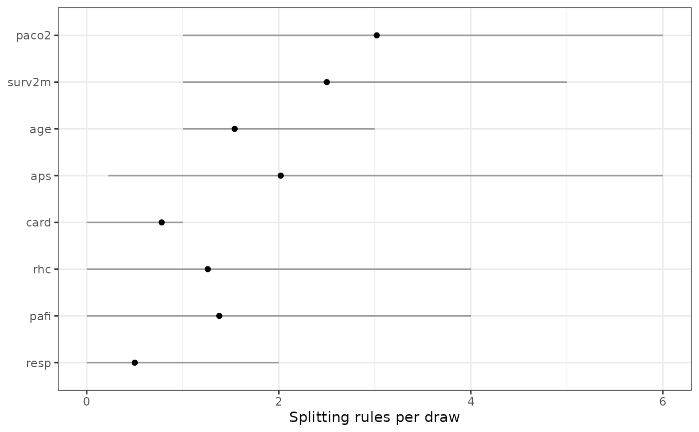

Reports, for every predictor, how many splitting rules the forest spends on
it and how often it is used at all, which is what "variable importance" means
for a BART model. This is the table summary.bartisan_fit() prints, returned
as a data frame rather than displayed (i.e., ready to sort, filter, or plot).
Usage
variable_importance(object, level = 0.95, draws = FALSE, plot = FALSE)
# S3 method for class 'bartisan_importance'
plot(x, y, ...)Arguments
- object
a
<bartisan_fit>object; the output of a call tobartisan().- level
numeric; the width of the interval reported forsplits. Default is .95 for a 95% interval.- draws
logical; whether to return the splitting counts of every posterior draw rather than a summary of them, for a comparison the summary does not offer. Default isFALSE. Cannot be combined withplot.- plot
logical; whether to return a ggplot2 plot ofsplitsand its interval for each predictor instead of the table. Default isFALSE. Equivalent to callingplot()on the result, which is usually more convenient since the table can be subset first.- x
a
<bartisan_importance>object; the output of a call tovariable_importance().- y
not used.
- ...
not used.
Value
A <bartisan_importance> object, which is a data frame with one row per
predictor and its own print() and plot() methods, sorted by prop_used
and then
splits, both decreasing, and with the following columns:
variable: the predictor, under the name the formula gave itprop_used: the proportion of draws in which it received at least one ruleprop_splits: its share of all the splitting rules in the forest, averaged over drawssplits: the mean number of splitting rules per draw that use itsplits_lowerandsplits_upper: the endpoints of thelevelinterval on that number, which theprint()method leaves out of the displayed table
A family with more than one additive predictor has a forest for each, and the
data frame then gains a leading predictor column naming which.
With draws = TRUE, the draws-by-predictors matrix of counts instead, or a
named list of them when there is more than one forest. With plot = TRUE, a
ggplot2 object.
Details
Reading the Columns
prop_used is the one to read first. It behaves like a posterior probability
that the predictor belongs in the model, and it separates signal from noise
sharply once sparsity = TRUE in bartisan_control(). With
sparsity = FALSE every predictor keeps a share of the rules and prop_used
sits near 1 throughout, which the print() method notes.
prop_splits is the one to reach for when two fits are being compared. The
share is computed within each draw before averaging, so the shares add to one
whatever the forest size, where splits counts rules and so scales with
num_trees. splits itself, the mean number of rules per draw, says how much
of the forest's structure a predictor accounts for, and is the easier of the
three to over-read.
Limits of a Usage Ranking
Usage is not effect size: a predictor can be split on constantly and move the
prediction very little. Where the question is how much a predictor moves the
outcome, marginaleffects::avg_comparisons()
on the fitted model
answers it; see bartisan-marginaleffects. Where two predictors carry the
same information the trees split on whichever is convenient and the usage
distributes between them arbitrarily, so a group of correlated predictors is
best read as a group. And a ranking by usage describes this fitted function
rather than what would happen if a predictor were changed.
Reading It as Variable Selection
With sparsity = TRUE, prop_used is usable as a selection rule: the
predictors the forest genuinely needs sit near 1 and the rest fall near 0,
usually with a wide gap rather than a continuum, and cutting that gap at .5
gives the median probability model. No threshold is correct in general, so the
gap is the thing to look at, and a conclusion worth reporting will not depend
on where in it the cut is made. A forest asked to fit noise still puts its
rules somewhere, so the cut chooses a predictive submodel rather than testing
one. vignette("importance") calibrates it against noise predictors and works
through correlated ones.
See also
summary.bartisan_fit(), which prints the same table;
bartisan_control() for sparsity; bartisan-marginaleffects for effects
rather than usage
Examples
data("rhc")
set.seed(123)
# The sparsity prior concentrates the splitting rules on the predictors that
# earn them, which is what makes `prop_used` readable as a selection rule
fit <- bartisan(death ~ . - days, data = rhc, num_trees = 10,
num_burn = 50, num_draws = 50, sparsity = TRUE,
verbose = FALSE)
#> ℹ Using `family = binomial()`.
#> ℹ Set `family` explicitly to silence this message.
imp <- variable_importance(fit)
imp
#> Variable importance
#>
#> variable prop_used prop_splits splits
#> pafi 1.00 0.163 2.8
#> aps 1.00 0.151 2.6
#> surv2m 1.00 0.112 1.9
#> age 1.00 0.091 1.6
#> paco2 1.00 0.090 1.5
#> rhc 0.84 0.099 1.7
#> meanbp 0.84 0.087 1.5
#> edu 0.44 0.039 0.7
#> card 0.42 0.029 0.5
#> hema 0.40 0.023 0.4
#> race 0.38 0.032 0.5
#> resp 0.36 0.044 0.7
#> crea 0.28 0.020 0.4
#> sex 0.24 0.019 0.3
#>
#> ℹ splits_lower and splits_upper hold the 95% interval, not shown above.
# The predictors the forest reaches for in nearly every draw
subset(imp, prop_used > .9)
#> Variable importance
#>
#> variable prop_used prop_splits splits
#> pafi 1 0.163 2.8
#> aps 1 0.151 2.6
#> surv2m 1 0.112 1.9
#> age 1 0.091 1.6
#> paco2 1 0.090 1.5
#>
# `prop_splits` is the column that survives a change of forest size, since
# the shares add to one however many rules there are to share
big <- bartisan(death ~ . - days, data = rhc, num_trees = 40,
num_burn = 50, num_draws = 50, sparsity = TRUE,
verbose = FALSE)
#> ℹ Using `family = binomial()`.
#> ℹ Set `family` explicitly to silence this message.
merge(variable_importance(fit)[c("variable", "prop_splits")],
variable_importance(big)[c("variable", "prop_splits")],
by = "variable", suffixes = c("_10", "_40"))
#> variable prop_splits_10 prop_splits_40
#> 1 age 0.09145554 0.081909718
#> 2 aps 0.15094173 0.150314800
#> 3 card 0.02948447 0.039288290
#> 4 crea 0.02047668 0.088576493
#> 5 edu 0.03915304 0.067878559
#> 6 hema 0.02317787 0.015440428
#> 7 meanbp 0.08678033 0.009164937
#> 8 paco2 0.08975803 0.066894390
#> 9 pafi 0.16322893 0.053418438
#> 10 race 0.03218804 0.012447264
#> 11 resp 0.04446252 0.053555629
#> 12 rhc 0.09870784 0.067816662
#> 13 sex 0.01862418 0.048068330
#> 14 surv2m 0.11156079 0.245226062
# The counts themselves, for a comparison the summary does not make
counts <- variable_importance(fit, draws = TRUE)
mean(counts[, "aps"] > counts[, "meanbp"])
#> [1] 0.56
# The ranking, drawn. Subsetting first is what keeps a wide model readable.
plot(head(imp, 8))
